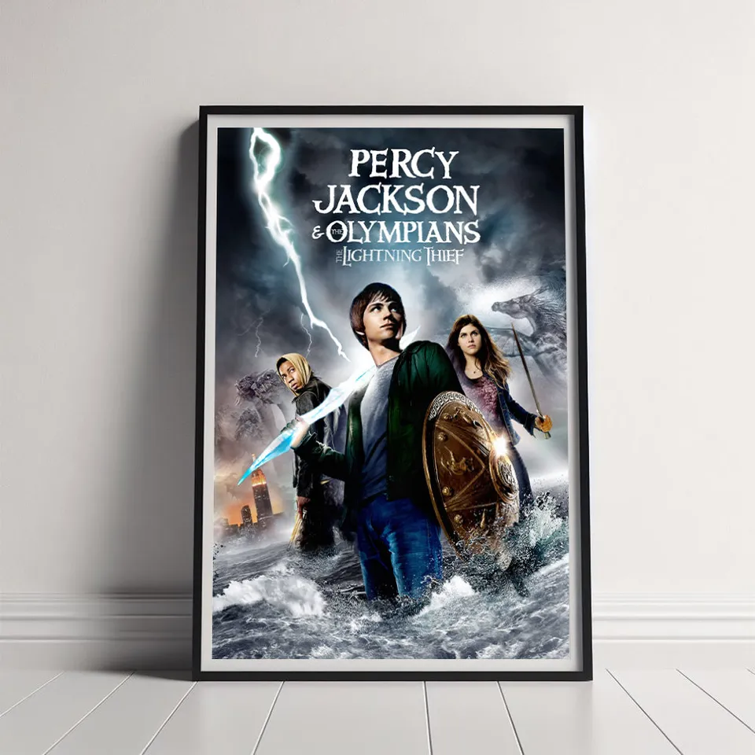

Main Page - Percy Jackson - The Heroes of Olympus - The Kane Chronicles - Magnus Chase - The Trials of Apollo - The Graphic Novels and Guides - Rick Riordan
This is a fanmade website about almost all of Rick Riordan's books about various demigods. There is a page on the major series except for the ones that have been released recently (2025) There are also pages about Rick Riordan and the graphic novels versions and guides to mythology.
Another good website to look at would be Rick Riordan's website.

This poster is from the first Percy Jackson movie.
Photo by anonymus from Printerval